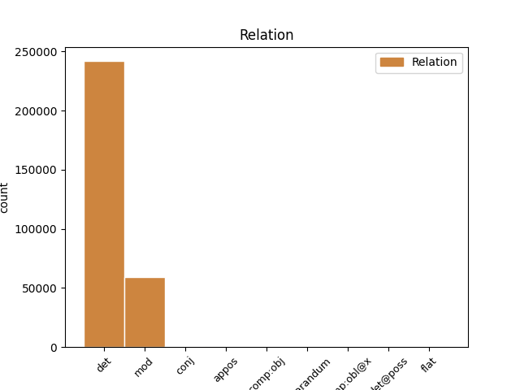
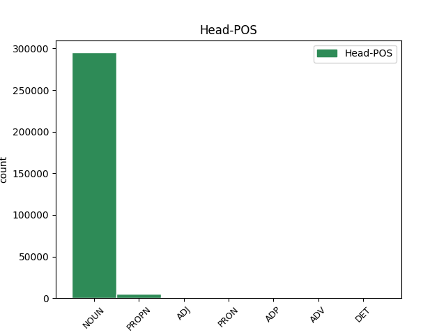
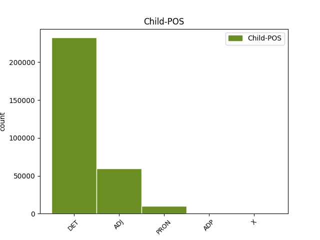

Distribution of features within this leaf



Agreement Rules sorted by frequency.
- When the dependent token is the determiner(det) of the head token, and the dependent token is DET.
1 Analysten _ _ _ _ 0 _ _ _
2 warnen _ _ _ _ 0 _ _ _
3 dagegen _ _ _ _ 0 _ _ _
4 , _ _ _ _ 0 _ _ _
5 dass _ _ _ _ 0 _ _ _
6 der _ _ _ _ 0 _ _ _
7 Umsatz _ _ _ _ 0 _ _ _
8 der der DET ART Case=Gen|Gender=Fem|Number=Sing|PronType=Art 9 det _ _
9 Firma Firma NOUN NN Gender=Fem|Number=Sing|Person=3 0 _ _ _
10 durch _ _ _ _ 0 _ _ _
11 die _ _ _ _ 0 _ _ _
12 Auftragsstornierungen _ _ _ _ 0 _ _ _
13 um _ _ _ _ 0 _ _ _
14 etwa _ _ _ _ 0 _ _ _
15 19 _ _ _ _ 0 _ _ _
16 Prozent _ _ _ _ 0 _ _ _
17 sinken _ _ _ _ 0 _ _ _
18 werde _ _ _ _ 0 _ _ _
19 . _ _ _ _ 0 _ _ _
1 Iomega _ _ _ _ 0 _ _ _
2 , _ _ _ _ 0 _ _ _
3 Spezialist _ _ _ _ 0 _ _ _
4 für _ _ _ _ 0 _ _ _
5 Speicherlösungen _ _ _ _ 0 _ _ _
6 , _ _ _ _ 0 _ _ _
7 liefert _ _ _ _ 0 _ _ _
8 nun _ _ _ _ 0 _ _ _
9 seinen _ _ _ _ 0 _ _ _
10 portablen portabel ADJ ADJA Case=Acc|Degree=Pos|Gender=Masc|Number=Sing 11 mod _ _
11 CD-RW-Brenner Brenner NOUN NN Gender=Masc|Number=Sing|Person=3 0 _ _ _
12 Predator _ _ _ _ 0 _ _ _
13 in _ _ _ _ 0 _ _ _
14 den _ _ _ _ 0 _ _ _
15 USA _ _ _ _ 0 _ _ _
16 aus _ _ _ _ 0 _ _ _
17 . _ _ _ _ 0 _ _ _
1 Iomega _ _ _ _ 0 _ _ _
2 , _ _ _ _ 0 _ _ _
3 Spezialist _ _ _ _ 0 _ _ _
4 für _ _ _ _ 0 _ _ _
5 Speicherlösungen _ _ _ _ 0 _ _ _
6 , _ _ _ _ 0 _ _ _
7 liefert _ _ _ _ 0 _ _ _
8 nun _ _ _ _ 0 _ _ _
9 seinen sein PRON PPOSAT Case=Acc|Gender=Masc|Number=Sing|Person=3|Poss=Yes|PronType=Prs 11 det _ _
10 portablen _ _ _ _ 0 _ _ _
11 CD-RW-Brenner Brenner NOUN NN Gender=Masc|Number=Sing|Person=3 0 _ _ _
12 Predator _ _ _ _ 0 _ _ _
13 in _ _ _ _ 0 _ _ _
14 den _ _ _ _ 0 _ _ _
15 USA _ _ _ _ 0 _ _ _
16 aus _ _ _ _ 0 _ _ _
17 . _ _ _ _ 0 _ _ _
1 Auf _ _ _ _ 0 _ _ _
2 der _ _ _ _ 0 _ _ _
3 Web-Site _ _ _ _ 0 _ _ _
4 des _ _ _ _ 0 _ _ _
5 noch _ _ _ _ 0 _ _ _
6 nicht _ _ _ _ 0 _ _ _
7 benannten _ _ _ _ 0 _ _ _
8 Unternehmens _ _ _ _ 0 _ _ _
9 soll _ _ _ _ 0 _ _ _
10 der _ _ _ _ 0 _ _ _
11 Surfer _ _ _ _ 0 _ _ _
12 Angebote _ _ _ _ 0 _ _ _
13 vergleichen _ _ _ _ 0 _ _ _
14 und _ _ _ _ 0 _ _ _
15 so _ _ _ _ 0 _ _ _
16 den _ _ _ _ 0 _ _ _
17 schnellsten schnell ADJ ADJA Case=Acc|Degree=Sup|Gender=Masc|Number=Sing 0 _ _ _
18 oder _ _ _ _ 0 _ _ _
19 günstigsten günstig ADJ ADJA Case=Acc|Degree=Sup|Gender=Masc|Number=Sing 17 conj _ _
20 Flug _ _ _ _ 0 _ _ _
21 auswählen _ _ _ _ 0 _ _ _
22 können _ _ _ _ 0 _ _ _
23 . _ _ _ _ 0 _ _ _
1 Der _ _ _ _ 0 _ _ _
2 Online-Shop Shop NOUN NN Gender=Masc|Number=Sing|Person=3 0 _ _ _
3 Boo.com _ _ _ _ 0 _ _ _
4 , _ _ _ _ 0 _ _ _
5 einer ein PRON PIS Case=Nom|Gender=Masc|Number=Sing|Person=3|PronType=Ind,Neg,Tot 2 appos _ _
6 der _ _ _ _ 0 _ _ _
7 ersten _ _ _ _ 0 _ _ _
8 E-Commerce-Pleitiers _ _ _ _ 0 _ _ _
9 , _ _ _ _ 0 _ _ _
10 ist _ _ _ _ 0 _ _ _
11 für _ _ _ _ 0 _ _ _
12 372.500 _ _ _ _ 0 _ _ _
13 Dollar _ _ _ _ 0 _ _ _
14 an _ _ _ _ 0 _ _ _
15 den _ _ _ _ 0 _ _ _
16 Internet-Dienstleister _ _ _ _ 0 _ _ _
17 Bright _ _ _ _ 0 _ _ _
18 Station _ _ _ _ 0 _ _ _
19 verkauft _ _ _ _ 0 _ _ _
20 worden _ _ _ _ 0 _ _ _
21 , _ _ _ _ 0 _ _ _
22 berichtete _ _ _ _ 0 _ _ _
23 die _ _ _ _ 0 _ _ _
24 Sunday _ _ _ _ 0 _ _ _
25 Times _ _ _ _ 0 _ _ _
26 . _ _ _ _ 0 _ _ _
1 Die _ _ _ _ 0 _ _ _
2 Firma _ _ _ _ 0 _ _ _
3 unterstütze _ _ _ _ 0 _ _ _
4 damit _ _ _ _ 0 _ _ _
5 nicht _ _ _ _ 0 _ _ _
6 nur _ _ _ _ 0 _ _ _
7 die _ _ _ _ 0 _ _ _
8 Weiterbildung Bildung NOUN NN Gender=Fem|Number=Sing|Person=3 0 _ _ _
9 der _ _ _ _ 0 _ _ _
10 eigenen _ _ _ _ 0 _ _ _
11 Angestellten _ _ _ _ 0 _ _ _
12 , _ _ _ _ 0 _ _ _
13 sondern _ _ _ _ 0 _ _ _
14 auch _ _ _ _ 0 _ _ _
15 die die PRON PDS Case=Acc|Gender=Fem|Number=Sing|Person=3|PronType=Dem 8 conj _ _
16 der _ _ _ _ 0 _ _ _
17 gesamten _ _ _ _ 0 _ _ _
18 Familie _ _ _ _ 0 _ _ _
19 , _ _ _ _ 0 _ _ _
20 was _ _ _ _ 0 _ _ _
21 nicht _ _ _ _ 0 _ _ _
22 zuletzt _ _ _ _ 0 _ _ _
23 dem _ _ _ _ 0 _ _ _
24 Staate _ _ _ _ 0 _ _ _
25 zu _ _ _ _ 0 _ _ _
26 Gute _ _ _ _ 0 _ _ _
27 käme _ _ _ _ 0 _ _ _
28 . _ _ _ _ 0 _ _ _
1 Noch _ _ _ _ 0 _ _ _
2 günstiger _ _ _ _ 0 _ _ _
3 surfen _ _ _ _ 0 _ _ _
4 kann _ _ _ _ 0 _ _ _
5 man _ _ _ _ 0 _ _ _
6 im _ _ _ _ 0 _ _ _
7 Einzugsbereich Bereich NOUN NN Gender=Masc|Number=Sing|Person=3 0 _ _ _
8 eines ein PRON PIS Case=Gen|Gender=Masc|Number=Sing|Person=3|PronType=Ind,Neg,Tot 7 mod _ _
9 der _ _ _ _ 0 _ _ _
10 84 _ _ _ _ 0 _ _ _
11 Einwahlpunkte _ _ _ _ 0 _ _ _
12 von _ _ _ _ 0 _ _ _
13 Viag _ _ _ _ 0 _ _ _
14 Interkom _ _ _ _ 0 _ _ _
15 , _ _ _ _ 0 _ _ _
16 die _ _ _ _ 0 _ _ _
17 jedoch _ _ _ _ 0 _ _ _
18 nicht _ _ _ _ 0 _ _ _
19 flächendeckend _ _ _ _ 0 _ _ _
20 zum _ _ _ _ 0 _ _ _
21 Ortstarif _ _ _ _ 0 _ _ _
22 erreichbar _ _ _ _ 0 _ _ _
23 sind _ _ _ _ 0 _ _ _
24 . _ _ _ _ 0 _ _ _
1 Vor _ _ _ _ 0 _ _ _
2 allem _ _ _ _ 0 _ _ _
3 US-Pädagogen _ _ _ _ 0 _ _ _
4 kritisieren _ _ _ _ 0 _ _ _
5 an _ _ _ _ 0 _ _ _
6 den _ _ _ _ 0 _ _ _
7 Filtersystemen _ _ _ _ 0 _ _ _
8 jedoch _ _ _ _ 0 _ _ _
9 die _ _ _ _ 0 _ _ _
10 Möglichkeit _ _ _ _ 0 _ _ _
11 zur zur ADP APPRART AdpType=Prep|Case=Dat|Gender=Fem|PronType=Art 0 _ _ _
12 Zensur _ _ _ _ 0 _ _ _
13 und _ _ _ _ 0 _ _ _
14 zur zur ADP APPRART AdpType=Prep|Case=Dat|Gender=Fem|PronType=Art 11 conj _ _
15 Manipulation _ _ _ _ 0 _ _ _
16 von _ _ _ _ 0 _ _ _
17 Informationen _ _ _ _ 0 _ _ _
18 . _ _ _ _ 0 _ _ _
1 Internet-User _ _ _ _ 0 _ _ _
2 wollen _ _ _ _ 0 _ _ _
3 keinen kein DET PIAT Case=Acc|Gender=Masc|Number=Sing|Person=3|PronType=Ind,Neg,Tot 4 mod _ _
4 Schnickschnack Schnickschnack NOUN NN Gender=Masc|Number=Sing|Person=3 0 _ _ _
1 Nach _ _ _ _ 0 _ _ _
2 Abschluß _ _ _ _ 0 _ _ _
3 der _ _ _ _ 0 _ _ _
4 Umstrukturierungen _ _ _ _ 0 _ _ _
5 wurden _ _ _ _ 0 _ _ _
6 nach _ _ _ _ 0 _ _ _
7 Unternehmensangaben _ _ _ _ 0 _ _ _
8 im _ _ _ _ 0 _ _ _
9 ersten _ _ _ _ 0 _ _ _
10 Halbjahr _ _ _ _ 0 _ _ _
11 2000 _ _ _ _ 0 _ _ _
12 mehr _ _ _ _ 0 _ _ _
13 als _ _ _ _ 0 _ _ _
14 10 _ _ _ _ 0 _ _ _
15 Millionen _ _ _ _ 0 _ _ _
16 GSM-Handys Handy NOUN NN Gender=Neut|Number=Plur|Person=3 0 _ _ _
17 ausgeliefert _ _ _ _ 0 _ _ _
18 , _ _ _ _ 0 _ _ _
19 jedes _ _ _ _ 0 _ _ _
20 vierte vierte ADJ ADJA Degree=Pos|Gender=Neut|Number=Sing 16 appos _ _
21 davon _ _ _ _ 0 _ _ _
22 in _ _ _ _ 0 _ _ _
23 Deutschland _ _ _ _ 0 _ _ _
24 . _ _ _ _ 0 _ _ _
1 Fürs Fürs ADP APPRART AdpType=Prep|Case=Acc|Gender=Neut|PronType=Art 0 _ _ _
2 erste NULL ADJ ADJA Degree=Sup|Gender=Neut|Number=Sing 1 comp:obj _ _
3 schlug _ _ _ _ 0 _ _ _
4 das _ _ _ _ 0 _ _ _
5 Gericht _ _ _ _ 0 _ _ _
6 den _ _ _ _ 0 _ _ _
7 Beteiligten _ _ _ _ 0 _ _ _
8 einen _ _ _ _ 0 _ _ _
9 Vergleich _ _ _ _ 0 _ _ _
10 vor _ _ _ _ 0 _ _ _
11 . _ _ _ _ 0 _ _ _
1 Thin _ _ _ _ 0 _ _ _
2 Clients _ _ _ _ 0 _ _ _
3 sind _ _ _ _ 0 _ _ _
4 stark _ _ _ _ 0 _ _ _
5 vereinfachte _ _ _ _ 0 _ _ _
6 Rechner _ _ _ _ 0 _ _ _
7 , _ _ _ _ 0 _ _ _
8 die _ _ _ _ 0 _ _ _
9 - _ _ _ _ 0 _ _ _
10 ähnlich _ _ _ _ 0 _ _ _
11 den _ _ _ _ 0 _ _ _
12 füheren _ _ _ _ 0 _ _ _
13 Terminals _ _ _ _ 0 _ _ _
14 - _ _ _ _ 0 _ _ _
15 Programme _ _ _ _ 0 _ _ _
16 und _ _ _ _ 0 _ _ _
17 Daten _ _ _ _ 0 _ _ _
18 zum _ _ _ _ 0 _ _ _
19 größten _ _ _ _ 0 _ _ _
20 Teil _ _ _ _ 0 _ _ _
21 über _ _ _ _ 0 _ _ _
22 das _ _ _ _ 0 _ _ _
23 Netzwerk _ _ _ _ 0 _ _ _
24 beziehen _ _ _ _ 0 _ _ _
25 und _ _ _ _ 0 _ _ _
26 so _ _ _ _ 0 _ _ _
27 nur _ _ _ _ 0 _ _ _
28 eine _ _ _ _ 0 _ _ _
29 sehr _ _ _ _ 0 _ _ _
30 kleine klein ADJ ADJA Degree=Pos|Gender=Fem|Number=Sing 0 _ _ _
31 oder _ _ _ _ 0 _ _ _
32 gar _ _ _ _ 0 _ _ _
33 keine kein DET PIAT Case=Nom|Gender=Fem|Number=Sing|Person=3|PronType=Ind,Neg,Tot 30 conj _ _
34 Festplatte _ _ _ _ 0 _ _ _
35 benötigen _ _ _ _ 0 _ _ _
36 . _ _ _ _ 0 _ _ _
1 Netscape _ _ _ _ 0 _ _ _
2 fehle _ _ _ _ 0 _ _ _
3 einfach _ _ _ _ 0 _ _ _
4 die _ _ _ _ 0 _ _ _
5 Zeit _ _ _ _ 0 _ _ _
6 , _ _ _ _ 0 _ _ _
7 um _ _ _ _ 0 _ _ _
8 neben _ _ _ _ 0 _ _ _
9 dem dem DET ART Case=Dat|Gender=Masc|Number=Sing|PronType=Art 10 reparandum _ _
10 dem dem DET ART Case=Dat|Gender=Masc|Number=Sing|PronType=Art 0 _ _ _
11 Document _ _ _ _ 0 _ _ _
12 Object _ _ _ _ 0 _ _ _
13 Model _ _ _ _ 0 _ _ _
14 ( _ _ _ _ 0 _ _ _
15 DOM _ _ _ _ 0 _ _ _
16 ) _ _ _ _ 0 _ _ _
17 des _ _ _ _ 0 _ _ _
18 W3C _ _ _ _ 0 _ _ _
19 auch _ _ _ _ 0 _ _ _
20 die _ _ _ _ 0 _ _ _
21 proprietären _ _ _ _ 0 _ _ _
22 DOMs _ _ _ _ 0 _ _ _
23 von _ _ _ _ 0 _ _ _
24 Internet _ _ _ _ 0 _ _ _
25 Explorer _ _ _ _ 0 _ _ _
26 4 _ _ _ _ 0 _ _ _
27 und _ _ _ _ 0 _ _ _
28 Navigator _ _ _ _ 0 _ _ _
29 4 _ _ _ _ 0 _ _ _
30 vollständig _ _ _ _ 0 _ _ _
31 zu _ _ _ _ 0 _ _ _
32 unterstützen _ _ _ _ 0 _ _ _
33 . _ _ _ _ 0 _ _ _
1 Offizieller _ _ _ _ 0 _ _ _
2 Hersteller _ _ _ _ 0 _ _ _
3 der _ _ _ _ 0 _ _ _
4 Billigmarke _ _ _ _ 0 _ _ _
5 ist _ _ _ _ 0 _ _ _
6 das _ _ _ _ 0 _ _ _
7 eigens _ _ _ _ 0 _ _ _
8 gegründete _ _ _ _ 0 _ _ _
9 Tochterunternehmen Tochterunternehmen NOUN NN Gender=Neut|Number=Sing|Person=3 0 _ _ _
10 Apollo _ _ _ _ 0 _ _ _
11 Consumer _ _ _ _ 0 _ _ _
12 Inc. Inc. X FM Foreign=Yes|Gender=Neut|Number=Sing|Person=3 9 appos _ _
13 ; _ _ _ _ 0 _ _ _
14 einzig _ _ _ _ 0 _ _ _
15 ein _ _ _ _ 0 _ _ _
16 HP-Label _ _ _ _ 0 _ _ _
17 weist _ _ _ _ 0 _ _ _
18 auf _ _ _ _ 0 _ _ _
19 die _ _ _ _ 0 _ _ _
20 tatsächliche _ _ _ _ 0 _ _ _
21 Herkunft _ _ _ _ 0 _ _ _
22 hin _ _ _ _ 0 _ _ _
23 . _ _ _ _ 0 _ _ _
1 Die _ _ _ _ 0 _ _ _
2 vor _ _ _ _ 0 _ _ _
3 dreieinhalb _ _ _ _ 0 _ _ _
4 Jahren _ _ _ _ 0 _ _ _
5 gegründete _ _ _ _ 0 _ _ _
6 Freiwillige _ _ _ _ 0 _ _ _
7 Selbstkontrolle _ _ _ _ 0 _ _ _
8 Multimedia-Diensteanbieter _ _ _ _ 0 _ _ _
9 ( _ _ _ _ 0 _ _ _
10 FSM _ _ _ _ 0 _ _ _
11 ) _ _ _ _ 0 _ _ _
12 wehrt _ _ _ _ 0 _ _ _
13 sich _ _ _ _ 0 _ _ _
14 gegen _ _ _ _ 0 _ _ _
15 die _ _ _ _ 0 _ _ _
16 ihr ihr PRON PPER Case=Dat|Gender=Fem|Number=Sing|Person=3|PronType=Prs 19 comp:obj _ _
17 immer _ _ _ _ 0 _ _ _
18 wieder _ _ _ _ 0 _ _ _
19 untergeschobene unterschieben ADJ ADJA Degree=Pos|Gender=Fem|Number=Sing 0 _ _ _
20 Rolle _ _ _ _ 0 _ _ _
21 , _ _ _ _ 0 _ _ _
22 zusammen _ _ _ _ 0 _ _ _
23 mit _ _ _ _ 0 _ _ _
24 ihrer _ _ _ _ 0 _ _ _
25 Dachgesellschaft _ _ _ _ 0 _ _ _
26 INHOPE _ _ _ _ 0 _ _ _
27 eine _ _ _ _ 0 _ _ _
28 internationale _ _ _ _ 0 _ _ _
29 Cyberpolizei _ _ _ _ 0 _ _ _
30 zu _ _ _ _ 0 _ _ _
31 spielen _ _ _ _ 0 _ _ _
32 . _ _ _ _ 0 _ _ _
1 Tatsächlich _ _ _ _ 0 _ _ _
2 wagten _ _ _ _ 0 _ _ _
3 sich _ _ _ _ 0 _ _ _
4 gestern _ _ _ _ 0 _ _ _
5 sogar _ _ _ _ 0 _ _ _
6 zwei _ _ _ _ 0 _ _ _
7 junge _ _ _ _ 0 _ _ _
8 Herren _ _ _ _ 0 _ _ _
9 mit _ _ _ _ 0 _ _ _
10 knallig-orangen _ _ _ _ 0 _ _ _
11 Corporate-T-Shirts _ _ _ _ 0 _ _ _
12 unter _ _ _ _ 0 _ _ _
13 die _ _ _ _ 0 _ _ _
14 zur zur ADP APPRART AdpType=Prep|Case=Dat|Gender=Fem|PronType=Art 18 comp:obj _ _
15 Verbrennung _ _ _ _ 0 _ _ _
16 von _ _ _ _ 0 _ _ _
17 Wagniskapital _ _ _ _ 0 _ _ _
18 auffordernde auffordern ADJ ADJA Degree=Pos|Gender=Fem|Number=Sing 0 _ _ _
19 Menge _ _ _ _ 0 _ _ _
20 , _ _ _ _ 0 _ _ _
21 auf _ _ _ _ 0 _ _ _
22 denen _ _ _ _ 0 _ _ _
23 der _ _ _ _ 0 _ _ _
24 Schriftzug _ _ _ _ 0 _ _ _
25 " _ _ _ _ 0 _ _ _
26 Handy.de _ _ _ _ 0 _ _ _
27 " _ _ _ _ 0 _ _ _
28 prangte _ _ _ _ 0 _ _ _
29 . _ _ _ _ 0 _ _ _
1 So _ _ _ _ 0 _ _ _
2 hatte _ _ _ _ 0 _ _ _
3 der _ _ _ _ 0 _ _ _
4 Fotofinisher _ _ _ _ 0 _ _ _
5 vor _ _ _ _ 0 _ _ _
6 Jahresfrist _ _ _ _ 0 _ _ _
7 eine _ _ _ _ 0 _ _ _
8 Zusammenarbeit _ _ _ _ 0 _ _ _
9 mit _ _ _ _ 0 _ _ _
10 AOL _ _ _ _ 0 _ _ _
11 vereinbart _ _ _ _ 0 _ _ _
12 , _ _ _ _ 0 _ _ _
13 im _ _ _ _ 0 _ _ _
14 Dezember _ _ _ _ 0 _ _ _
15 2000 _ _ _ _ 0 _ _ _
16 die _ _ _ _ 0 _ _ _
17 ehedem _ _ _ _ 0 _ _ _
18 zur zur ADP APPRART AdpType=Prep|Case=Dat|Gender=Fem|PronType=Art 21 comp:obl@x _ _
19 Lintec _ _ _ _ 0 _ _ _
20 AG _ _ _ _ 0 _ _ _
21 gehörende gehören ADJ ADJA Degree=Pos|Gender=Fem|Number=Sing 0 _ _ _
22 ORWO _ _ _ _ 0 _ _ _
23 Media _ _ _ _ 0 _ _ _
24 und _ _ _ _ 0 _ _ _
25 im _ _ _ _ 0 _ _ _
26 Februar _ _ _ _ 0 _ _ _
27 2001 _ _ _ _ 0 _ _ _
28 die _ _ _ _ 0 _ _ _
29 Photo-Porst-Gruppe _ _ _ _ 0 _ _ _
30 übernommen _ _ _ _ 0 _ _ _
31 . _ _ _ _ 0 _ _ _
1 Der _ _ _ _ 0 _ _ _
2 verwendet _ _ _ _ 0 _ _ _
3 als _ _ _ _ 0 _ _ _
4 Bildgeber _ _ _ _ 0 _ _ _
5 über _ _ _ _ 0 _ _ _
6 400000 _ _ _ _ 0 _ _ _
7 Spiegelchen _ _ _ _ 0 _ _ _
8 aus _ _ _ _ 0 _ _ _
9 hochreflektiver _ _ _ _ 0 _ _ _
10 Aluminiumfolie _ _ _ _ 0 _ _ _
11 , _ _ _ _ 0 _ _ _
12 so _ _ _ _ 0 _ _ _
13 breit _ _ _ _ 0 _ _ _
14 wie _ _ _ _ 0 _ _ _
15 ein _ _ _ _ 0 _ _ _
16 Fünftel _ _ _ _ 0 _ _ _
17 eines eines DET ART Case=Gen|Gender=Neut|Number=Sing|PronType=Art 19 det@poss _ _
18 menschliches _ _ _ _ 0 _ _ _
19 Haars Haar NOUN NN Case=Gen|Gender=Neut|Number=Sing|Person=3 0 _ _ _
20 . _ _ _ _ 0 _ _ _
1 Die _ _ _ _ 0 _ _ _
2 Vertreter _ _ _ _ 0 _ _ _
3 der _ _ _ _ 0 _ _ _
4 US-Regierung _ _ _ _ 0 _ _ _
5 enthielten _ _ _ _ 0 _ _ _
6 sich _ _ _ _ 0 _ _ _
7 ihrer sein PRON PPOSAT Case=Gen|Gender=Fem|Number=Sing|Person=3|Poss=Yes|PronType=Prs 8 det@poss _ _
8 Stimme Stimme NOUN NN Gender=Fem|Number=Sing|Person=3 0 _ _ _
9 , _ _ _ _ 0 _ _ _
10 da _ _ _ _ 0 _ _ _
11 kein _ _ _ _ 0 _ _ _
12 wirklicher _ _ _ _ 0 _ _ _
13 Konsens _ _ _ _ 0 _ _ _
14 über _ _ _ _ 0 _ _ _
15 einen _ _ _ _ 0 _ _ _
16 Vorschlag _ _ _ _ 0 _ _ _
17 zustande _ _ _ _ 0 _ _ _
18 kam _ _ _ _ 0 _ _ _
19 . _ _ _ _ 0 _ _ _
1 Es _ _ _ _ 0 _ _ _
2 sei _ _ _ _ 0 _ _ _
3 einfach _ _ _ _ 0 _ _ _
4 eine _ _ _ _ 0 _ _ _
5 Idee _ _ _ _ 0 _ _ _
6 , _ _ _ _ 0 _ _ _
7 die _ _ _ _ 0 _ _ _
8 zur zur ADP APPRART AdpType=Prep|Case=Dat|Gender=Fem|PronType=Art 9 reparandum _ _
9 zur zur ADP APPRART AdpType=Prep|Case=Dat|Gender=Fem|PronType=Art 0 _ _ _
10 Diskussion _ _ _ _ 0 _ _ _
11 gestellt _ _ _ _ 0 _ _ _
12 worden _ _ _ _ 0 _ _ _
13 sei _ _ _ _ 0 _ _ _
14 . _ _ _ _ 0 _ _ _
1 Man _ _ _ _ 0 _ _ _
2 werde _ _ _ _ 0 _ _ _
3 aber _ _ _ _ 0 _ _ _
4 auch _ _ _ _ 0 _ _ _
5 niemanden _ _ _ _ 0 _ _ _
6 abweisen _ _ _ _ 0 _ _ _
7 , _ _ _ _ 0 _ _ _
8 der _ _ _ _ 0 _ _ _
9 Gebühren _ _ _ _ 0 _ _ _
10 für _ _ _ _ 0 _ _ _
11 seinen sein PRON PPOSAT Case=Acc|Gender=Masc|Number=Sing|Person=3|Poss=Yes|PronType=Prs 12 reparandum _ _
12 seinen sein PRON PPOSAT Case=Acc|Gender=Masc|Number=Sing|Person=3|Poss=Yes|PronType=Prs 0 _ _ _
13 PC _ _ _ _ 0 _ _ _
14 bezahlen _ _ _ _ 0 _ _ _
15 wolle _ _ _ _ 0 _ _ _
16 . _ _ _ _ 0 _ _ _
Disagree Examples:
1 Eigentlich _ _ _ _ 0 _ _ _
2 wollte _ _ _ _ 0 _ _ _
3 der _ _ _ _ 0 _ _ _
4 Internet-Provider _ _ _ _ 0 _ _ _
5 Freenet.de _ _ _ _ 0 _ _ _
6 mit _ _ _ _ 0 _ _ _
7 seinem _ _ _ _ 0 _ _ _
8 Newsletter _ _ _ _ 0 _ _ _
9 Interessenten _ _ _ _ 0 _ _ _
10 über _ _ _ _ 0 _ _ _
11 ein ein DET ART Case=Acc|Gender=Neut|Number=Sing|PronType=Art 13 det _ _
12 neuen _ _ _ _ 0 _ _ _
13 Internet-Zugang Zugang NOUN NN Gender=Masc|Number=Sing|Person=3 0 _ _ _
14 via _ _ _ _ 0 _ _ _
15 Satellit _ _ _ _ 0 _ _ _
16 informieren _ _ _ _ 0 _ _ _
17 . _ _ _ _ 0 _ _ _
1 Es _ _ _ _ 0 _ _ _
2 sei _ _ _ _ 0 _ _ _
3 auch _ _ _ _ 0 _ _ _
4 ein ein DET ART Case=Nom|Gender=Neut|Number=Sing|PronType=Art 5 det _ _
5 Fehleinschätzung Einschätzung NOUN NN Gender=Fem|Number=Sing|Person=3 0 _ _ _
6 und _ _ _ _ 0 _ _ _
7 Vorurteil _ _ _ _ 0 _ _ _
8 , _ _ _ _ 0 _ _ _
9 dass _ _ _ _ 0 _ _ _
10 nur _ _ _ _ 0 _ _ _
11 das _ _ _ _ 0 _ _ _
12 Angebot _ _ _ _ 0 _ _ _
13 eines _ _ _ _ 0 _ _ _
14 Pauschaltarifs _ _ _ _ 0 _ _ _
15 neue _ _ _ _ 0 _ _ _
16 Menschen _ _ _ _ 0 _ _ _
17 ins _ _ _ _ 0 _ _ _
18 Internet _ _ _ _ 0 _ _ _
19 locken _ _ _ _ 0 _ _ _
20 könne _ _ _ _ 0 _ _ _
21 , _ _ _ _ 0 _ _ _
22 ist _ _ _ _ 0 _ _ _
23 sich _ _ _ _ 0 _ _ _
24 Holtrop _ _ _ _ 0 _ _ _
25 sicher _ _ _ _ 0 _ _ _
26 . _ _ _ _ 0 _ _ _
1 Laut _ _ _ _ 0 _ _ _
2 AT&T _ _ _ _ 0 _ _ _
3 seien _ _ _ _ 0 _ _ _
4 diese _ _ _ _ 0 _ _ _
5 Boxen _ _ _ _ 0 _ _ _
6 ein _ _ _ _ 0 _ _ _
7 wichtiger _ _ _ _ 0 _ _ _
8 Schritt _ _ _ _ 0 _ _ _
9 , _ _ _ _ 0 _ _ _
10 um _ _ _ _ 0 _ _ _
11 ein ein DET ART Case=Acc|Gender=Neut|Number=Sing|PronType=Art 13 det _ _
12 neues _ _ _ _ 0 _ _ _
13 E-Commerce-Model Model NOUN NN Gender=Masc|Number=Sing|Person=3 0 _ _ _
14 zu _ _ _ _ 0 _ _ _
15 etablieren _ _ _ _ 0 _ _ _
16 , _ _ _ _ 0 _ _ _
17 das _ _ _ _ 0 _ _ _
18 eine _ _ _ _ 0 _ _ _
19 Kombinationen _ _ _ _ 0 _ _ _
20 von _ _ _ _ 0 _ _ _
21 digitalem _ _ _ _ 0 _ _ _
22 personalisiertem _ _ _ _ 0 _ _ _
23 Fernsehen _ _ _ _ 0 _ _ _
24 und _ _ _ _ 0 _ _ _
25 Internet-Zugang _ _ _ _ 0 _ _ _
26 biete _ _ _ _ 0 _ _ _
27 . _ _ _ _ 0 _ _ _
1 Laut _ _ _ _ 0 _ _ _
2 AT&T _ _ _ _ 0 _ _ _
3 seien _ _ _ _ 0 _ _ _
4 diese _ _ _ _ 0 _ _ _
5 Boxen _ _ _ _ 0 _ _ _
6 ein _ _ _ _ 0 _ _ _
7 wichtiger _ _ _ _ 0 _ _ _
8 Schritt _ _ _ _ 0 _ _ _
9 , _ _ _ _ 0 _ _ _
10 um _ _ _ _ 0 _ _ _
11 ein _ _ _ _ 0 _ _ _
12 neues neu ADJ ADJA Degree=Pos|Gender=Neut|Number=Sing 13 mod _ _
13 E-Commerce-Model Model NOUN NN Gender=Masc|Number=Sing|Person=3 0 _ _ _
14 zu _ _ _ _ 0 _ _ _
15 etablieren _ _ _ _ 0 _ _ _
16 , _ _ _ _ 0 _ _ _
17 das _ _ _ _ 0 _ _ _
18 eine _ _ _ _ 0 _ _ _
19 Kombinationen _ _ _ _ 0 _ _ _
20 von _ _ _ _ 0 _ _ _
21 digitalem _ _ _ _ 0 _ _ _
22 personalisiertem _ _ _ _ 0 _ _ _
23 Fernsehen _ _ _ _ 0 _ _ _
24 und _ _ _ _ 0 _ _ _
25 Internet-Zugang _ _ _ _ 0 _ _ _
26 biete _ _ _ _ 0 _ _ _
27 . _ _ _ _ 0 _ _ _
1 Dass _ _ _ _ 0 _ _ _
2 Streamgate _ _ _ _ 0 _ _ _
3 zu _ _ _ _ 0 _ _ _
4 seinem _ _ _ _ 0 _ _ _
5 Vorteil _ _ _ _ 0 _ _ _
6 den _ _ _ _ 0 _ _ _
7 Unmut _ _ _ _ 0 _ _ _
8 all _ _ _ _ 0 _ _ _
9 jener _ _ _ _ 0 _ _ _
10 ausnutzen _ _ _ _ 0 _ _ _
11 wollte _ _ _ _ 0 _ _ _
12 , _ _ _ _ 0 _ _ _
13 die _ _ _ _ 0 _ _ _
14 derzeit _ _ _ _ 0 _ _ _
15 immer _ _ _ _ 0 _ _ _
16 noch _ _ _ _ 0 _ _ _
17 zu _ _ _ _ 0 _ _ _
18 Hunderttausenden _ _ _ _ 0 _ _ _
19 auf _ _ _ _ 0 _ _ _
20 den _ _ _ _ 0 _ _ _
21 bestellten _ _ _ _ 0 _ _ _
22 T-DSL-Anschluss _ _ _ _ 0 _ _ _
23 warten _ _ _ _ 0 _ _ _
24 und _ _ _ _ 0 _ _ _
25 sich _ _ _ _ 0 _ _ _
26 zudem _ _ _ _ 0 _ _ _
27 durch _ _ _ _ 0 _ _ _
28 die die DET ART Case=Acc|Gender=Fem|Number=Sing|PronType=Art 30 det _ _
29 penetrante _ _ _ _ 0 _ _ _
30 Robert Robert PROPN NE Gender=Masc|Number=Sing|Person=3 0 _ _ _
31 T-Online _ _ _ _ 0 _ _ _
32 Werbung _ _ _ _ 0 _ _ _
33 veralbert _ _ _ _ 0 _ _ _
34 fühlen _ _ _ _ 0 _ _ _
35 dürften _ _ _ _ 0 _ _ _
36 , _ _ _ _ 0 _ _ _
37 wird _ _ _ _ 0 _ _ _
38 der _ _ _ _ 0 _ _ _
39 Telekom _ _ _ _ 0 _ _ _
40 nicht _ _ _ _ 0 _ _ _
41 gefallen _ _ _ _ 0 _ _ _
42 haben _ _ _ _ 0 _ _ _
43 . _ _ _ _ 0 _ _ _